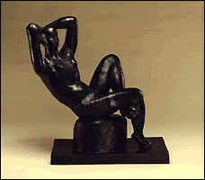

The Minneapolis Institute of Arts
Main Menu ~ Permanent Collection List ~ Interactive Museum Maps ~ Back ~ Next
Sculpture
 (c) 22k
View Renaissance bronzes, 18th-century marble and terracotta pieces, 19th-century French works, and 20th-century works by such celebrated artists as Henri Matisse and Pablo Picasso. Sculpture is included in many permanent galleries and in some special exhibitions.